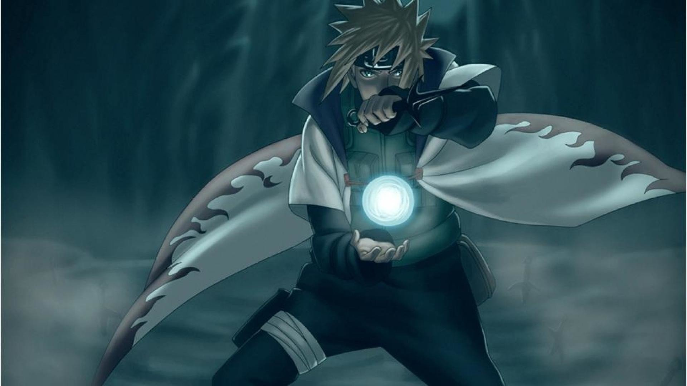
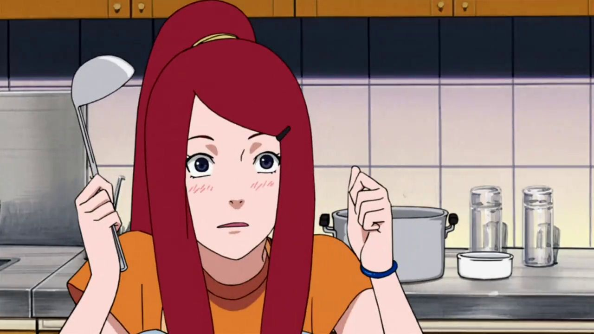

Радители Наруто
Минато

Минато Намиказе (яп. 波風ミナト, Намикадзэ Минато) был Четвертым Хокаге (яп. 四代目火影, Ёндаэмэ Хокаге; Буквальное значение: Четвёртая Тень Огня) Скрытого Листа. При жизни он был известен за свою скорость, что привело к появлению прозвища Желтая Вспышка Конохи (яп. 木ノ葉の黄色い閃光, Коноха но Киирой Сэнкоо; Буквальное значение: Желтая Вспышка Листа). Он умер во время Нападения Девятихвостого Демона-Лиса, отдав свою жизнь, запечатав напавшего на деревню Лиса в своём новорождённом сыне.
Кушина

Кушина Узумаки (яп. うずまきクシナ, Удзумаки Кущина) была куноичи Скрытого Листа, происходившей из клана Узумаки Деревни Скрытых Водоворотов. Была второй джинчуурики Девятихвостого. Была женой Четвёртого Хокаге и матерью Наруто Узумаки.